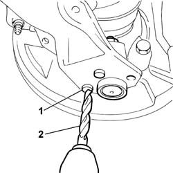
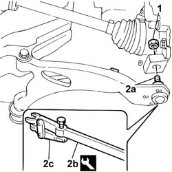
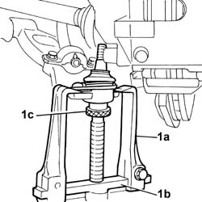

4410B64 TRACK ROD END (ONE) ON FRONT STEERING KNUCKLE, LEFT OR RIGHT - REPLACE.
- Path
- Procedures > 44 SUSPENSION AND WHEELS > 4410 FRONT SUSPENSION > 4410B front suspension wishbones > 4410B64 TRACK ROD END (ONE) ON FRONT STEERING KNUCKLE, LEFT OR RIGHT - REPLACE.
- Kind
- repair procedure (removal / refitting; the operation number is the code)
- Applies to
- all engines; all production periods
- Interactive page
- https://sloeber94.github.io/elrnDB-fDbl/en/#/2584740
Applies to: all engines; all production periods
 Removing
Removing
 Refitting
RefittingPlace the car on a lift.
Remove a front wheel, proceed as in the example
Op. 4450B02 LEFT FRONT WHEEL - R.R..
Raise the vehicle.
1. Strike the upper part of the rivets securing the ball joint.
2. Destroy the rivetting using a drill, firstly with a small bit and then with a 10 mm bit.
Remove any burrs using a drift.

Applies to: all engines; all production periods
1. Undo the nut securing the wishbone ball joint to the front hub steering knuckle.
2. Separate the wishbone ball joint (2a) from the steering knucle using tools (2b) and (2c).
 | Name | Country |
|---|---|---|
2b | Head extractor | 1.847.035.000 |
| Name | Country |
|---|---|---|
2c | Tool for extracting steering knuckles | 1.847.035.001 |
Remove the nut securing the ball joint to the steering knuckle.

Applies to: all engines; all production periods
1. Remove the ball joint from its seat on the wishbone using tools (1a) and (1b) and reaction bar (1c).
| Name | Country |
|---|---|---|
1a | Extractor | 1.840.005.001 |
| Name | Country |
|---|---|---|
1b | Clamps | 1.840.005.303 |
| Name | Country |
|---|---|---|
1c | Pad | 1.845.028.000 |

Applies to: all engines; all production periods
Refitting
RemovingPosition a new ball joint on the wishbone.
Secure the ball joint to the wishbone using the three bolts supplied with the ball joint.
Tighten the bolts securing the ball joint to torque.
 | Fastening | Component | Ø | Value (daNm) |
|---|---|---|---|---|
- | Nut | FRONT SUSPENSION LOWER LEVER BALL JOINT | - | (on track control arm) 2.4 |
Fit the head (conical) to the pillar and tighten the retaining nut.
| Fastening | Component | Ø | Value (daNm) |
|---|---|---|---|---|
- | Nut | FRONT SUSPENSION LOWER LEVER BALL JOINT | M12 x 1.25 | (on pillar) 6 |
Refit the front wheel, proceed as in the example
Op. 4450B02 LEFT FRONT WHEEL - R.R.
Remove the car from the lift.